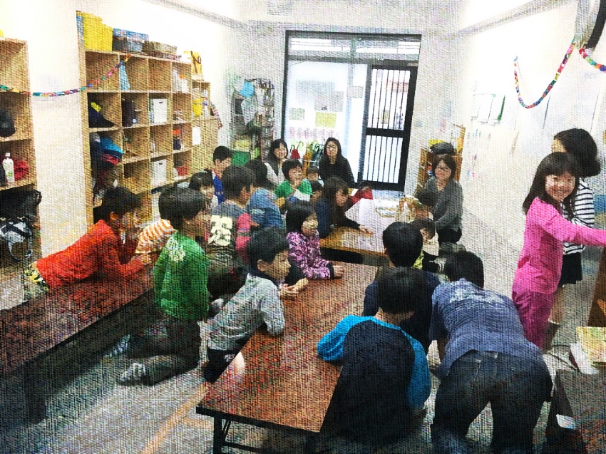
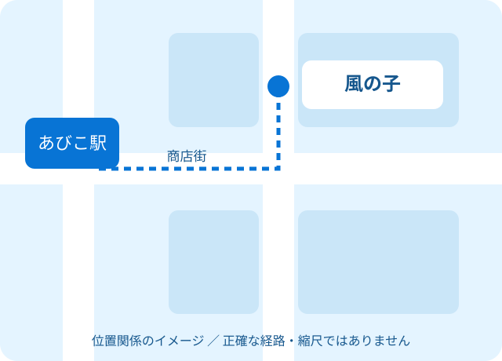

VISIT & CONTACT
まずは、
会いに行くことから。
見学時に聞きたいことを整理できるフォームと、アクセス情報をご用意しました。フォームは操作デモです。

既存サイト掲載写真TRY THE FORM
見学・お問い合わせの操作デモ。
PREVIEW ONLY
入力内容の確認
以下は画面上の確認のみです。送信されません。
DEMO COMPLETED
操作デモが完了しました。
送信・予約・施設への連絡は行われていません。入力内容は消去しました。
ACCESS
風の子へのアクセス。

提案用の概略図・縮尺や道幅は正確ではありません
- 所在地の掲載情報
- 大阪市住吉区苅田5-6-28
辻川ハイツ1階 - 最寄り駅の掲載情報
- 地下鉄「あびこ駅」。既存サイトに商店街を東へ進む経路案内があります。
- 電話番号の掲載情報
- 06-6699-0120
デモでは発信リンクを設けていません。
掲載根拠：既存サイト「学童紹介」（外部サイト）↗ ／ 2026年10月21日確認。現行の運用は施設確認待ち。
OFFICIAL INFORMATION
実際のご相談について。
正式な見学・入所相談は、施設の最新の案内をご確認ください。デモでは施設への連絡や外部フォームの送信を行いません。
掲載元のサイト・確認待ち事項を見る